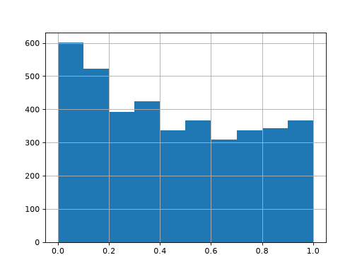

Statistical Tests#
Autoprot Analysis Functions.
@author: Wignand, Julian, Johannes
@documentation: Julian
- autoprot.analysis.stat_test.adjust_p(df, p_col, method='fdr_bh')[source]#
Use statsmodels.multitest on dataframes.
Note: when nan in p-value this function will return only nan.
- Parameters:
df (pd.DataFrame) – Input dataframe.
p_col (str) – column containing p-values for correction.
method (str, optional) – ‘b’: ‘Bonferroni’, ‘s’: ‘Sidak’, ‘h’: ‘Holm’, ‘hs’: ‘Holm-Sidak’, ‘sh’: ‘Simes-Hochberg’, ‘ho’: ‘Hommel’, ‘fdr_bh’: ‘FDR Benjamini-Hochberg’, ‘fdr_by’: ‘FDR Benjamini-Yekutieli’, ‘fdr_tsbh’: ‘FDR 2-stage Benjamini-Hochberg’, ‘fdr_tsbky’: ‘FDR 2-stage Benjamini-Krieger-Yekutieli’, ‘fdr_gbs’: ‘FDR adaptive Gavrilov-Benjamini-Sarkar’ The default is “fdr_bh”.
- Returns:
df – The input dataframe with adjusted p-values. The dataframe will have a column named “adj.{pCol}”
- Return type:
pd.DataFrame
Examples
>>> twitchVsmild = ['log2_Ratio H/M normalized BC18_1','log2_Ratio M/L normalized BC18_2', ... 'log2_Ratio H/M normalized BC18_3', ... 'log2_Ratio H/L normalized BC36_1','log2_Ratio H/M normalized BC36_2', ... 'log2_Ratio M/L normalized BC36_2'] >>> prot = pd.read_csv("_static/testdata/03_proteinGroups_minimal.zip", sep='\t', low_memory=False) >>> protRatio = prot.filter(regex="Ratio .\/. normalized") >>> protLog = pp.log(prot, protRatio, base=2) >>> prot_tt = ana.ttest(df=protLog, reps=twitchVsmild, cond="TvM", mean=True, adjust_p_vals=False) >>> prot_tt_adj = ana.adjust_p(prot_tt, p_col="pValue_TvM") >>> prot_tt_adj.filter(regex='pValue').head() pValue_TvM adj.pValue_TvM 0 NaN NaN 1 0.947334 0.966514 2 NaN NaN 3 NaN NaN 4 0.031292 0.206977
- autoprot.analysis.stat_test.cohen_d(df, group1, group2)[source]#
Calculate Cohen’s d effect size for two groups.
- Parameters:
df (pd.Dataframe) – Input dataframe.
group1 (str) – Colname for group1.
group2 (str) – Colname for group2.
- Returns:
df – Input dataframe with a new column “cohenD”.
- Return type:
pd.Dataframe
Notes
Cohen’s d is defined as the difference between two means divided by a standard deviation for the data. Note that the pooled standard deviation here is calculated differently than originally proposed by Cohen.
References
[1] Cohen, Jacob (1988). Statistical Power Analysis for the Behavioral Sciences. Routledge. [2] https://www.doi.org/10.22237/jmasm/1257035100
- autoprot.analysis.stat_test.limma(df: DataFrame, reps: list[list[str]], cond: str = '', custom_design: str = None, coef: str = None, print_r: bool = False, return_cols: bool = False)[source]#
Perform moderated ttest as implemented from R LIMMA.
- Parameters:
df (pd.DataFrame) – Input dataframe.
reps (list of lists of str) – Column names of the replicates. Common replicates are grouped together in a single list.
cond (str, optional) – Term to append to the newly generated colnames. The default is “”.
custom_design (str, optional) – Path to custom design file. The default is None.
coef (str, optional) – The coefficients serving as the basis for calculating p-vlaues and fold-changes from the eBayes. Must refer to design matrix colnames. If no custom design is specified the default coeficient is “coef”. Differences are indicated e.g. by “CondA-CondB”. See https://rdrr.io/bioc/limma/man/toptable.html for details. The default is None.
print_r (bool, optional) – Whether to print the R output. The default is False.
return_cols (bool, optional) – Whether to return the columns of the R output DataFrame.
- Returns:
df (pd.DataFrame) – The input dataframe with additional columns.
list [str] | None – If return_cols is True, returns the columns of the R output DataFrame excluding “UID”.
Notes
A custom design matriox has rows corresponding to arrays and columns to coefficients to be estimated can be provided using customDesign. If customDesign is the unit vector meaning that the arrays are treated as replicates. See: https://www.rdocumentation.org/packages/limma/versions/3.28.14/topics/lmFit
Examples
>>> data = pd.DataFrame({"a1":np.random.normal(loc=0, size=4000), ... "a2":np.random.normal(loc=0, size=4000), ... "a3":np.random.normal(loc=0, size=4000), ... "b1":np.random.normal(loc=0.5, size=4000), ... "b2":np.random.normal(loc=0.5, size=4000), ... "b3":np.random.normal(loc=0.5, size=4000),}) >>> testRes = ana.limma(df=data, reps=[["a1","a2", "a3"],["b1","b2", "b3"]], cond="_test") >>> testRes["P.Value_test"].hist()
import autoprot.analysis as ana df = pd.DataFrame({"a1":np.random.normal(loc=0, size=4000), "a2":np.random.normal(loc=0, size=4000), "a3":np.random.normal(loc=0, size=4000), "b1":np.random.normal(loc=0.5, size=4000), "b2":np.random.normal(loc=0.5, size=4000), "b3":np.random.normal(loc=0.5, size=4000),}) testRes = ana.limma(df, reps=[["a1","a2", "a3"],["b1","b2", "b3"]], cond="_test") testRes["P.Value_test"].hist() plt.show()
(
Source code,png,hires.png,pdf)
{kind=link}
{kind=link}
- autoprot.analysis.stat_test.rank_prod(df, reps, cond='', print_r=False, correct_fc=True, min_vv=1, return_cols=False)[source]#
Perform RankProd test as in R RankProd package.
At the moment one sample test only. Test for up and downregulated genes separately therefore returns two p values.
- Parameters:
df (pd.DataFrame) – Input dataframe.
reps (list of lists of str) – Column names of the replicates. Common replicates are grouped together in a single list.
cond (str, optional) – Term to append to the newly generated colnames. The default is “”.
print_r (bool, optional) – Whether to print the R output. The default is False.
correct_fc (bool, optional) – The rankProd package does not calculate fold-changes for rows with missing values (p Values are calculated). If correct_fc is False the original fold changes from rankProd are return, else fold changes are calculated for all values after ignoring NaNs.
min_vv (int, optional) – Minimum number of valid values for a row to be considered. The default is 1.
return_cols (bool, optional) – Whether to return the columns of the R output DataFrame.
- Returns:
df – Input dataframe with additional columns from RankProd.
- Return type:
pd.DataFrame
Notes
The adjusted p-values returned from the R backend are the percentage of false positives calculated by the rankProd package. This is akin to corrected p values, but care should be taken to name these values accordingly.
- autoprot.analysis.stat_test.ttest(df, reps, cond='', return_fc=True, adjust_p_vals=True, alternative='two-sided', logged=True)[source]#
Perform one or two sample ttest.
- Parameters:
df (pd.DataFrame) – Input dataframe.
reps (list of str or list of lists of str) – The replicates to be included in the statistical test. Either a list of the replicates or a list containing two list with the respective replicates.
cond (str, optional) – The name of the condition. This is used for naming the returned results. The default is “”.
return_fc (bool, optional) – Whether to calculate the fold-change of the provided data. The processing of the fold-change can be controlled by the logged switch. The default is True.
adjust_p_vals (bool, optional) – Whether to adjust P-values. The default is True.
alternative ({'two-sided', 'less', 'greater'}, optional) –
Defines the alternative hypothesis. The following options are available (default is ‘two-sided’):
’two-sided’: the mean of the underlying distribution of the sample is different from the given population mean (popmean)
’less’: the mean of the underlying distribution of the sample is less than the given population mean (popmean)
’greater’: the mean of the underlying distribution of the sample is greater than the given population mean (popmean)
logged (bool, optional) – Set to True if input values are log-transformed (or VSN normalised). This returns the difference between values as log_fc, otherwise values are log2 transformed to gain log_fc. Default is true.
- Returns:
df – Input dataframe with additional cols.
- Return type:
pd.DataFrame
Examples
twitchVsmild = ['log2_Ratio H/M normalized BC18_1','log2_Ratio M/L normalized BC18_2', 'log2_Ratio H/M normalized BC18_3', 'log2_Ratio H/L normalized BC36_1','log2_Ratio H/M normalized BC36_2', 'log2_Ratio M/L normalized BC36_2'] prot = pd.read_csv("../data/proteinGroups_minimal.zip", sep='\\t', low_memory=False) protRatio = prot.filter(regex=r"Ratio .\/. normalized").columns protLog = pp.log(prot, protRatio, base=2) prot_tt = ana.ttest(df=protLog, reps=twitchVsmild, cond="_TvM", return_fc=True, adjust_p_vals=True) prot_tt["pValue_TvM"].hist(bins=50) plt.show()
df = pd.DataFrame({"a1":np.random.normal(loc=0, size=4000), "a2":np.random.normal(loc=0, size=4000), "a3":np.random.normal(loc=0, size=4000), "b1":np.random.normal(loc=0.5, size=4000), "b2":np.random.normal(loc=0.5, size=4000), "b3":np.random.normal(loc=0.5, size=4000),}) ana.ttest(df=df, reps=[["a1","a2", "a3"],["b1","b2", "b3"]])["pValue"].hist(bins=50) plt.show()